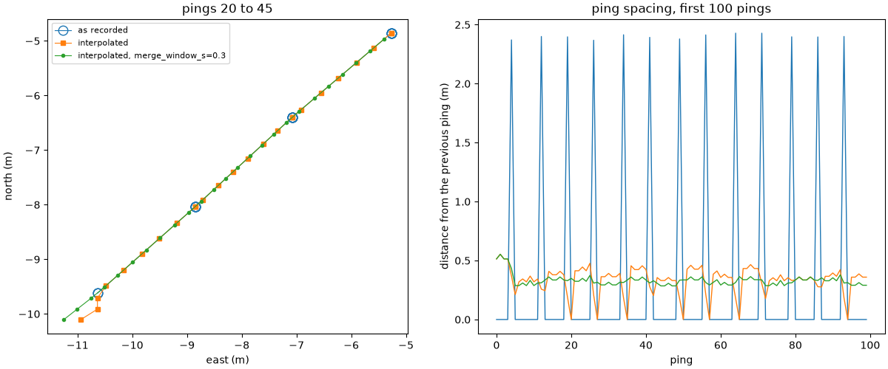
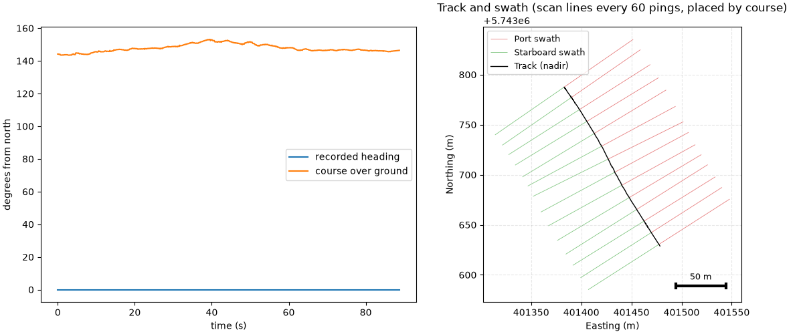
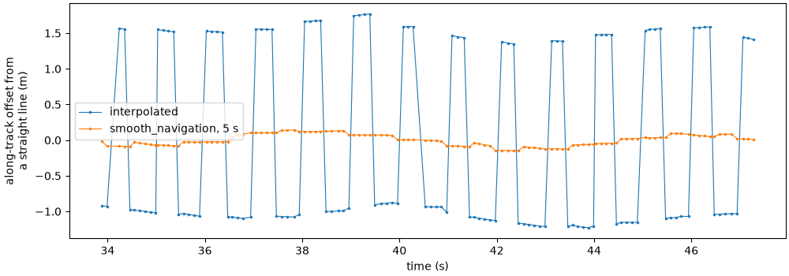

Note
Go to the end to download the full example code.
Navigation: held fixes, interpolation and the track#
Sidescan positions come from a GPS (or the towfish’s own navigation) that updates far less often than the sonar pings. Recorders log each fix and repeat it until the next one arrives, so before computing any geometry the positions have to be rebuilt between the real fixes. This page looks at two public lines where that goes wrong in different ways, and shows how to see it and fix it:
a Klein line whose recorder logs every GPS update over two entries;
a Klein line from an older survey that records no heading at all, and whose positions jump back at every GPS fix.
Data: USGS Grand Bay (U.S. public domain) and BGS London Gateway (Open Government Licence; contains data supplied by UKRI); see Example data.
Usage: python examples/gallery/plot_navigation.py [output_dir]
# 2026 rshomberg@uri.edu
import sys
from pathlib import Path
import matplotlib.pyplot as plt
import numpy as np
from sidescanpy import datasets
from sidescanpy.io import read_and_convert
from sidescanpy.log import configure_logging
from sidescanpy.processing import (
aux_update_events,
build_survey_track,
interpolate_aux_onto_pings,
smooth_navigation,
)
from sidescanpy.processing.navigation import course_over_ground
from sidescanpy.viz import plot_track_and_scanlines
out = Path(sys.argv[1]) if len(sys.argv) > 1 else Path(".")
out.mkdir(parents=True, exist_ok=True)
configure_logging("WARNING")
def east_north(ds):
"""Per-ping positions in local meters (east, north) from the first ping."""
lat, lon = ds["latitude"].values, ds["longitude"].values
k = 111_320.0 * np.cos(np.radians(np.nanmean(lat)))
return (lon - lon[0]) * k, (lat - lat[0]) * 111_320.0
def steps(ds):
e, n = east_north(ds)
return np.hypot(np.diff(e), np.diff(n))
How often does the GPS really update?#
aux_update_events() counts how many
navigation entries pass between real changes. On this Grand Bay line
a quarter of the changes come one entry after the previous one, and
the rest 6 to 7 entries apart: each GPS update is logged as a jump and
then a tiny follow-up one entry (0.13 s) later.
survey = read_and_convert([datasets.fetch("usgs_grand_bay_150602205800.xtf")], fmt="xtf")
for var, stats in aux_update_events(survey.navigation).items():
if var in ("latitude", "longitude"):
print(var, "entries between changes:", stats.change_gap_entries)
latitude entries between changes: {'p5': 1.0, 'p25': 1.0, 'p50': 6.0, 'p75': 7.0, 'p95': 8.0}
longitude entries between changes: {'p5': 1.0, 'p25': 1.0, 'p50': 6.0, 'p75': 7.0, 'p95': 7.0}
Three versions of the same track#
As recorded, every ping repeats the last fix until the next arrives, so
the track moves in 2 m jumps. Interpolating between fixes
(interpolate_aux_onto_pings()) spreads the
jumps over the pings, but the follow-up entries count as extra fixes
65 ms after the real ones, so the track stalls for one ping in seven.
merge_window_s joins changes less than that far apart into one
update. Choose it longer than the follow-up delay and shorter than the
real update interval; aux_update_events shows both. On a line whose
navigation changes at every entry there is nothing to merge: a merge
window there joins real fixes and collapses the track.
raw = survey.get_frequency("hz_100000").dataset
default = interpolate_aux_onto_pings(survey).get_frequency("hz_100000").dataset
merged = interpolate_aux_onto_pings(survey, merge_window_s=0.3).get_frequency("hz_100000").dataset
versions = [("as recorded", raw), ("interpolated", default), ("interpolated, merge_window_s=0.3", merged)]
fig, (ax_map, ax_step) = plt.subplots(1, 2, figsize=(12, 5), constrained_layout=True)
styles = {"as recorded": dict(marker="o", ms=9, mfc="none", lw=0.8),
"interpolated": dict(marker="s", ms=4, lw=0.8),
"interpolated, merge_window_s=0.3": dict(marker=".", ms=6, lw=0.8)}
for label, ds in versions:
e, n = east_north(ds)
sel = slice(20, 45)
ax_map.plot(e[sel], n[sel], label=label, **styles[label])
ax_step.plot(steps(ds)[:100], lw=1, label=label)
print(f"{label:34s} median step {np.median(steps(ds)):.2f} m, "
f"steps under 0.1 m: {int((steps(ds) < 0.1).sum())} of {ds.sizes['ping'] - 1}")
ax_map.set_aspect("equal")
ax_map.set_xlabel("east (m)")
ax_map.set_ylabel("north (m)")
ax_map.set_title("pings 20 to 45")
ax_map.legend(fontsize=8)
ax_step.set_xlabel("ping")
ax_step.set_ylabel("distance from the previous ping (m)")
ax_step.set_title("ping spacing, first 100 pings")
fig.savefig(out / "navigation_held_fixes.png", dpi=150)

17:24:35 WARNING sidescanpy.processing.aux_fixes: held_value_fixes ['heading_deg']: 4 update events combine more than 5 changes; the stream may update faster than merge_window_s=0.3 s
17:24:35 WARNING sidescanpy.processing.aux_fixes: held_value_fixes ['heading_deg']: 4 update events combine more than 5 changes; the stream may update faster than merge_window_s=0.3 s
17:24:35 WARNING sidescanpy.processing.aux_fixes: held_value_fixes ['pitch_deg']: 4 update events combine more than 5 changes; the stream may update faster than merge_window_s=0.3 s
17:24:35 WARNING sidescanpy.processing.aux_fixes: held_value_fixes ['roll_deg']: 2 update events combine more than 5 changes; the stream may update faster than merge_window_s=0.3 s
as recorded median step 0.00 m, steps under 0.1 m: 256 of 296
interpolated median step 0.36 m, steps under 0.1 m: 20 of 296
interpolated, merge_window_s=0.3 median step 0.33 m, steps under 0.1 m: 1 of 296
No heading recorded: use the course over ground#
This London Gateway line stores its positions in UTM zone 31N without
saying so (nav_crs tells the reader) and records heading as 0
throughout. Georeferenced with that heading, every ping would point
north. course_over_ground()
measures the course from the positions a few seconds either side of
each ping; it assumes the towfish follows the vessel’s track (no crab
angle), which holds on a straight line.
bgs = read_and_convert([datasets.fetch("bgs_london_gateway_dynamo_90.xtf")], fmt="xtf", nav_crs="EPSG:32631")
bds = interpolate_aux_onto_pings(bgs).get_frequency("hz_400000").dataset
course = course_over_ground(bds)
print(f"recorded heading: {np.unique(bds['heading_deg'].values)}; course over ground: "
f"{np.nanmin(course):.0f} to {np.nanmax(course):.0f} deg")
track = build_survey_track({Path("dynamo_90"): bgs}, "hz_400000", scanline_stride=60, heading="course")
fig, (ax_h, ax_t) = plt.subplots(1, 2, figsize=(12, 5), constrained_layout=True)
t = (bds["time"].values - bds["time"].values[0]).astype("timedelta64[ns]").astype(np.int64) / 1e9
ax_h.plot(t, bds["heading_deg"].values, label="recorded heading")
ax_h.plot(t, course, label="course over ground")
ax_h.set_xlabel("time (s)")
ax_h.set_ylabel("degrees from north")
ax_h.legend()
plot_track_and_scanlines(track.track_lat, track.track_lon, track.scan_port_lat, track.scan_port_lon,
track.scan_stbd_lat, track.scan_stbd_lon, scan_nadir_lat=track.scan_nadir_lat,
scan_nadir_lon=track.scan_nadir_lon, fig=fig, ax=ax_t,
title="Track and swath (scan lines every 60 pings, placed by course)")
fig.savefig(out / "navigation_course.png", dpi=150)

17:24:51 WARNING sidescanpy.io.xtf.reader: bgs_london_gateway_dynamo_90.xtf: ChanInfo SampleFormat 255 is not an XTF sample format; treated as unset (legacy), so samples are read by BytesPerSample
17:24:51 WARNING sidescanpy.io.xtf.converter: bgs_london_gateway_dynamo_90.xtf: SensorX/Y is ShipX/Y shifted by a fixed -1.8 m east, -12.5 m north (an offset rotated by heading 0); using the Ship positions. Set heading_deg (e.g. course over ground) before the layback step
17:24:51 WARNING sidescanpy.io.xtf.converter: /home/runner/work/sidescanpy/sidescanpy/.sidescanpy-data/bgs_london_gateway_dynamo_90.xtf: sound velocity disagrees by more than 5% with 2*SlantRange/TimeDuration in 789 of 789 pings (median 1500.0 vs 1333.6 m/s); kept the ping-header value
17:24:51 WARNING sidescanpy.io.xtf.converter: hz_400000: 1578 channel block(s) have an implausible Weight (-8408 to -4584, beyond +-30); their samples are left unscaled
recorded heading: [0.]; course over ground: 143 to 153 deg
Positions that jump back at every fix#
Another line from the same survey changes position at every entry, so
there are no held fixes to interpolate between, yet once a second the
track jumps back by about 2.5 m: the recorder runs the position ahead of
each GPS fix and corrects it when the next one arrives. Seen against a
straight line, the along-track error is a square wave with a 1 s
period. smooth_navigation() replaces each
position with a straight-line fit over a time window; 5 s spans whole
periods, so the error averages out (and so do the occasional single
stale positions some lines have, like the line above).
line80 = interpolate_aux_onto_pings(
read_and_convert([datasets.fetch("bgs_london_gateway_dynamo_80.xtf")], fmt="xtf", nav_crs="EPSG:32631"))
raw80 = line80.get_frequency("hz_400000").dataset
smoothed = smooth_navigation(line80, window_s=5.0).get_frequency("hz_400000").dataset
t80 = (raw80["time"].values - raw80["time"].values[0]).astype("timedelta64[ns]").astype(np.int64) / 1e9
def along_residual(ds, sel):
e, n = east_north(ds)
e, n = e[sel], n[sel]
u = np.array([e[-1] - e[0], n[-1] - n[0]]) / np.hypot(e[-1] - e[0], n[-1] - n[0])
along = e * u[0] + n * u[1]
ts = t80[sel]
return ts, along - np.polyval(np.polyfit(ts, along, 1), ts)
sel = slice(300, 420)
fig, ax = plt.subplots(figsize=(10, 3.5), constrained_layout=True)
for label, ds in (("interpolated", raw80), ("smooth_navigation, 5 s", smoothed)):
ts, resid = along_residual(ds, sel)
ax.plot(ts, resid, ".-", ms=3, lw=0.8, label=label)
print(f"{label:24s} along-track error: {np.std(resid):.2f} m (standard deviation)")
ax.set_xlabel("time (s)")
ax.set_ylabel("along-track offset from\na straight line (m)")
ax.legend()
fig.savefig(out / "navigation_sawtooth.png", dpi=150)

17:25:05 WARNING sidescanpy.io.xtf.reader: bgs_london_gateway_dynamo_80.xtf: ChanInfo SampleFormat 255 is not an XTF sample format; treated as unset (legacy), so samples are read by BytesPerSample
17:25:05 WARNING sidescanpy.io.xtf.converter: bgs_london_gateway_dynamo_80.xtf: SensorX/Y is ShipX/Y shifted by a fixed -1.8 m east, -12.5 m north (an offset rotated by heading 0); using the Ship positions. Set heading_deg (e.g. course over ground) before the layback step
17:25:05 WARNING sidescanpy.io.xtf.converter: /home/runner/work/sidescanpy/sidescanpy/.sidescanpy-data/bgs_london_gateway_dynamo_80.xtf: sound velocity disagrees by more than 5% with 2*SlantRange/TimeDuration in 966 of 966 pings (median 1500.0 vs 1333.6 m/s); kept the ping-header value
17:25:05 WARNING sidescanpy.io.xtf.converter: hz_400000: 1932 channel block(s) have an implausible Weight (-8408 to -4584, beyond +-30); their samples are left unscaled
interpolated along-track error: 1.28 m (standard deviation)
smooth_navigation, 5 s along-track error: 0.08 m (standard deviation)
Total running time of the script: (0 minutes 30.874 seconds)